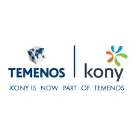

Full Stack Developer, Intern
Kony India Pvt. Ltd, Hyderabad, Telangana, India
• Started as an Intern, Improved Sync and Connection manager services by 25% and implemented 2+ secure and robust Rest API’s to perform CRUD on database models for Mobile Fabric.
• Optimised identity scanning and Facial Recognition by 33% through business
adapters, Jumio and Gemalto, on camera API.
• Received ”Pat on the back” award for integrating enterprise systems like AWS S3
adapter for image upload/download with Mobile Fabric. On the performance basis, offered position as a full stack developer.
• Worked on responsive web development for iOS/Android and desktop on 5+ modules for clients like TDECU, EHS etc., in Kony Digital Banking Suite.
• Performed research in the form of proof of concepts in the fields of scrapping, camera API(security, storage and overlay) to understand the internal workings and to contributed findings to Kony DBX.
• Tested 10+ modules of the Kony Banking applicating suite diligently with robust testcases developed using TestNG framework.
• Mentored 5+ interns and explained the internal working of the product Kony DBX.
Key Learning: Kony - MDA Architecture, MVC and MVVM architectures, Javascript, TestNG, Java
Other Learning: AngularJs, Mobile app security testing, Web analytics evaluation